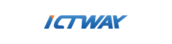
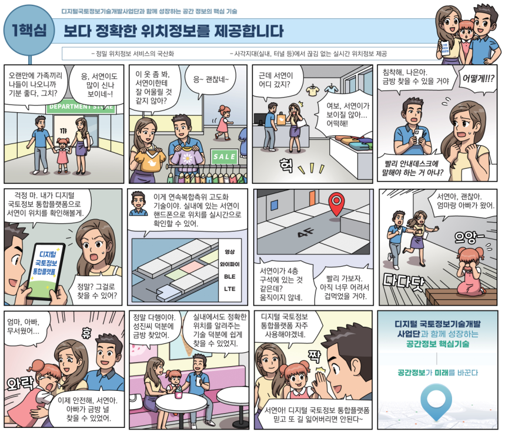

디지털 국토정보 기술개발 사업 연구성과 시스템
주요 핵심 기술
1핵심 소개
초정밀 디지털 국토정보 획득을 위한 절대/상대 연속복합 측위 고도화 기술 개발
연구 목표
Multi-GNSS, 영상, 다중신호, 센서융합 등을 이용하여 다양한 이동환경(보행, 차량, 드론 등)에서 GNSS 음영지역(지하, 터널, 실내 등)을 해소하고 끊김없는 실시간 위치정보를 제공하기 위한 초정밀 절대, 상대, 연속복합측위 및 측위지원 단말·서버 플랫폼 기술개발
주요 기술
-
① (절대측위 기술) Multi-GNSS 다중주파수 신호 기반 실시간 고정밀 측위보정 정보 서버 인프라 및 모바일 환경기반 고정밀 위치정보 기술개발
- 고정밀 실시간 Multi-GNSS 보정정보 서버 SW 국산화 및 활용 서비스 기술개발
- GNSS 불량·음영지역 최소화를 위한 Pseudo-GNSS 실증적용 기술개발
-
② (상대연속복합측위) 영상기반 상대측위, 비영상 신호기반 복합측위 및 GNSS 기반 절대측위 연계 연속측위 기술 고도화
- 영상기반 정밀상대측위, 다중신호 복합측위 및 연속복합측위 기술개발
- 연속복합측위 지원을 위한 프레임워크 기술개발 및 표준화
- 이동환경별(보행, 차량, 드론 등) 연속복합 측위 최적화 및 실증 적용 기술개발
기대 효과
- 실내외 고정밀 측위정보가 필요한 자율주행차 상용화 및 드론을 활용한 물류 분야 등 미래형 위치서비스 산업에 기여
- 실내외 끊김없는 위치정보관련 서비스 개발 및 확산을 통해 위치정보 기반 공간정보 서비스 산업 활성화 기여
수행업체
주관기관
공동기관

1핵심 기술 이해하기 (만화)
